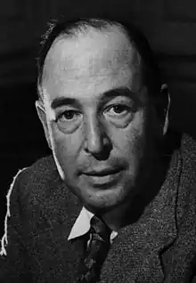

Клайв Стейплз Льюїс (англ. Clive Staples Lewis) (нар. 29 листопада, 1898 — пом. 22 листопада, 1963) — відомий північноірландський та англійський письменник, філософ, літературний критик, спеціаліст із Середньовіччя і християнський апологет. Писав англійською мовою. Автор циклу "Хроніки Нарнії".
Дитинство
Народився 29 листопада 1898 року в Белфасті, (Північна Ірландія), у родині адвоката Альберта Джеймса Льюїса (1863—1929). Перші десять років його життя були доволі щасливими. У Льюїса був старший брат, історик Воррен Льюїс (1895—1973). Коли Клайву було 4 роки, його пса Джексі збила машина. Після цього випадку Льюїс заявив, що відтепер його новим ім'ям буде Джексі. Спочатку він не відкликався ні на яке інше ім'я, але пізніше згодився на ім'я Джек, як його і називали решту життя рідні та друзі. З дитинства він захоплювався казковими тваринами і любив читати оповідання Беатріс Потер, нерідко пишучи свої власні оповідання про тварин та малюючи до них ілюстрації. Разом зі своїм братом Ворні вони створюють казковий світ Боксен, де живуть і правлять звірі. Льюїс любив читати, і цьому сприяв той факт, що будинок його батька був переповнений книгами, де неважко було щось вибрати. У віці семи років його родина переїздить до "Літтл Лі" ("Little Lea"), будинку його дитинства у Східному Уельсі. Мати письменника Флоренс Августа Льюїс (уроджена Гамільтон; 1862—1908 рр.) була донькою англіканського священика. Клайв дуже любив матір і багато отримав від неї — вони вчила його мов (навіть латині) і, що найважливіше, зуміла закласти основу його моральних засад. Коли йому ще не було десяти, вона померла від раку. Батько, людина похмура і нелагідна, у 1908 році, відразу після смерті матері, віддав його у закриту школу Віньярд подалі від дому. Брат Ворні потрапив туди трьома роками раніше. Невдовзі школу закрили через брак учнів, а директора школи Роберта Капрона "Олді" запроторили до божевільні. Потім Льюїс відвідував коледж Кемпбел у східному районі Белфаста, за милю від дому, але через респіраторне захворювання незабаром залишає його. Його відправляють до курортно-оздоровчого містечка Малверн у Ворцестерширі, де він відвідував підготовчу школу Шербур Хаус. У серпні 1913 року Льюїс вступив до коледжа Малверн, де він залишався до наступного червня. Саме в цей час 15-річний Клайв залишає прищеплену з дитинства християнську віру і стає атеїстом. Його новими інтересами стають міфологія та містика. Після коледжа Льюїс бере приватні уроки у Вільяма Кіркпатріка, колишнього директора коледжа Лурган, який вчив ще його батька. Підлітком Льюїс захоплювався стародавніми скандинавськими піснями і легендами Півночі, представленими ісландськими сагами. Ці легенди пробуджували в ньому внутрішнє прагнення, яке він пізніше описав яко "радість". Льюїс линув до природи. Її краса нагадувала йому про північні оповідання, і навпаки, північні оповідання нагадували йому про красу природи. Його підліткова творчість відрізнялася від стилю оповідань про Боксен. Тепер від застосовував різні форми мистецтва, намагаючись закарбувати своє нове захоплення північною міфологією та світом природи. Навчання з Кіркпатріком розвинуло в ньому замилування до давньогрецької літератури і міфології, а також відточило його вміння дискутувати і логічно мислити. У 1916 році Льюїс отримав грант на навчання в Оксфордському університеті. Перша світова війна Після закінчення школи в 1917 році вступає до Оксфорду, проте незабаром кидає навчання і добровольцем йде на фронт. У британській армії стає молодшим офіцером. У 1918 році, після поранення демобілізується й повертається до університету, де закінчує студії. У 1919 під псевдонімом Клайв Гамільтон (англ. Clive Hamilton) друком виходить його перша поетична збірка — "Пригноблений дух" (англ. Spirits in Bondage). У 1923 одержує ступінь бакалавра, а згодом — магістра. Стає викладачем філології. У період з 1925 по 1954 — викладає англійську мову й літературу в коледжі Святої Магдалени в Оксфорді. У 1926 році знову ж таки під псевдонімом Клайв Гамільтон випускає збірку поезій "Даймертаймер" (англ. Dymer). У 1931 році в житті Льюїса відбувається світоглядна зміна: він усвідомлено стає християнином. Цьому, зокрема, посприяла одна тривала нічна розмова з його оксфордськими товаришами Дж. Р. Р. Толкіном (католиком-традиціоналістом) і Г'юґо Дайсоном. (Ця знакова розмова була майстерно реконструйована (за листуванням і щоденниковими записами сумісників) Артуром Грівсом у його книзі "Вони стали разом"). Вечірня дискусія стала прологом для події наступного дня, яку Льюїс описує в своїй духовій автобіографії "Спійманий радістю": "Коли ми (Ворні і Джек) вирушили (на мотоциклі в зоопарк Віпснейд), я не вірив, що Ісус Христос є Син Божий, але коли ми прийшли в зоопарк, я вірив". З 1933 по 1949 рік навколо Льюїса збирається гурток друзів, який згодом стає основою оксфордської літературно-дискусійного гурту "Інклінги", сумісниками якого стали Джон Рональд Руел Толкін, Воррен Льюїс (брат письменника), Г'юґо Дайсон, Чарльз Вільямс, доктор Роберт Хавард, Оуен Барфілд, Уевілл Когхілл та ін. У 1938—1945 Льюїс створює "Космічну трилогію" — класичний взірець філософської фантастики XX-го століття. У 1950—1955 публікуються "Хроніки Нарнії". Найяскравіші частини циклу — "Лев, чаклунка й магічна шафа" (англ. The Lion, the Witch and Wardrobe), "Небіж Чорнокнижника" (англ. The Magician's Nephew) і "Остання битва" (англ. The Last Battle). у 1942—1943 публікується одна з найяскравіших апологетичних книжок християнства "Просто християнство", у якій автор у формі спілкування з читачем порушує всі важливі теми своєї рідної релігії: Ісус яко Син Божий, Мораль, Істина, Сексуальність, Гордість і багато інших. За версією сайту ChristianityToday.com ця книжка посіла аж 1 місце в списку книжок, які найбільше змінили євангелічний світ з 1945 року ₪. Ця книжка була написана на основі радіопередач для БіБіСі, та мала неабиякий успіх серед британських радіослухачів. Звертає увагу на хворобу людства в сексуальній царині: проституція, журнали з голими жіночими тілами, упад моральних правил поведінки в статевому житті. Уникаючи контроверсійних питань, а також не акцентуючи уваги на жодній із гілок християнства подає логічну струнку картину розуміння базових світобудовних та власне християнських цінностей. Завдяки зваженому та проробленому підходу книжка здобула слави класики християнської апологетики. У лютому 1942 виходить друком ще одна відома книжка автора "Листи Крутеня". Написана вона у епістолярному стилі, де головний герой — старший демон на ім'я Крутень навчає свого підопічного маленького бісика Шашеля науці спокус та зведення нанівець усіх намагань людей стати справжніми християнами. У комічно-вигаданому стилі автор розкриває низку надважливих питань не лише для християн, а й для всіх охочих зазирнути під серпанок іншого виміру: виміру добрих і злих сил. Ця книжка також була прочитана автором у радіоефірі. У 1954 році Льюїс переїжджає в Кембридж, де викладає англійську мову й літературу в коледжі Св. Магдалени. В наступному, 1955-му стає членом Британської академії. У 1956 Льюїс одружується з американкою Джой Девідмен (1915—1960). У 1960 році Льюїс і Джой разом з друзями їдуть у мандрівку Грецією, під час якої відвідують Афіни, Мікени, Родос, Геракліон і Кносс. Джой помирає 13 липня, незабаром після повернення з подорожі. У 1961 році, почувши заяву Юрія Ґаґаріна про те що, той "у Космосі був і Бога не бачив" Льюїс стисло відказав: "Із таким само успіхом Гамлет міг би шукати Шекспіра на горищі власного замку". У 1963 році Клайв Льюїс припиняє викладацьку діяльність через проблеми зі здоров'ям. 22 листопада того ж року письменник помер, не доживши тиждень до свого ювілею. До самої смерті він залишався на посаді в Кембриджі й був почесним членом Коледжу св. Магдалени. Похований біля церкви святої Трійці в Хедінгтон Куерре, Оксфорд. Більшу частину життя прожив в Англії. Понад усе відомий циклом творів, об'єднаних під назвою "Хроніки Нарнії".